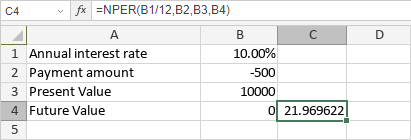

NPER funkcija
NPER funkcija je jedna od finansijskih funkcija. Koristi se za izračunavanje broja perioda za investiciju na osnovu specificirane kamatne stope i konstantnog rasporeda uplata.
Sintaksa
NPER(rate, pmt, pv, [fv], [type])
NPER funkcija ima sledeće argumente:
| Argument | Opis |
|---|---|
| rate | Kamatna stopa. |
| pmt | Iznos uplate. |
| pv | Trenutna vrednost uplata. |
| fv | Buduća vrednost investicije. Ovo je opcion argument. Ako se izostavi, funkcija će pretpostaviti da je fv 0. |
| type | Period kada su uplate dospele. Ovo je opcion argument. Ako je postavljeno na 0 ili izostavljeno, funkcija će pretpostaviti da su uplate dospele na kraju perioda. Ako je type postavljeno na 1, uplate su dospele na početku perioda. |
Napomene
Isplaćeni novac (kao što su depoziti na štednju) prikazuje se negativnim brojevima; primljeni novac (kao što su dividende) prikazuje se pozitivnim brojevima.
Kako primeniti NPER funkciju.
Primeri
Na slici ispod prikazan je rezultat koji vraća NPER funkcija.
